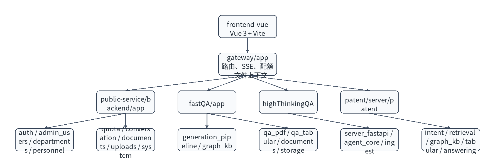

版本记录
| 版本 | 日期 | 修订人 | 修订说明 |
|---|
| V1.0 | 2026/05/20 | 项目组 | 初版 |
1 设计维护记录
| 版本 | 日期 | 作者 | 修订摘要 |
|---|
| V1.0 | 2026/05/20 | 项目组 | 形成 LiFeO4Agent 开发文档初版，覆盖架构、模块、接口、数据库、开发环境和发布规则。 |
2 文档引言
2.1 目的
本文档面向开发人员、测试人员和维护人员，说明 LiFeO4Agent 的工程结构、核心模块、数据库设计、接口设计、开发环境、编码规范、数据包构建和常见问题。部署人员应主要阅读部署手册和运维手册。
2.2 背景
系统用于支撑电池材料研发过程中的文献检索、深度分析、专利检索和原文核对。项目从单体和本地资源依赖逐步演进为前端、网关、公共服务和多个 QA 后端组成的容器化系统，以便离线交付、增量升级和运维管理。
2.3 术语
| 术语 | 说明 |
|---|
| fastQA | 文献快速问答后端。 |
| highThinkingQA | 深度思考问答后端，负责多阶段分析。 |
| patentQA | 专利问答后端，负责专利检索、tables 和图谱增强。 |
| public-service | 公共能力服务，负责用户、部门、人员、配额、会话和文件。 |
| reference data | 向量库、索引、JSON archive 等可由数据包重建的数据。 |
| seed job | compose 启动时执行的一次性数据导入容器。 |
3 需求说明
| 需求编号 | 业务需求 | 实现模块 |
|---|
| REQ-001 | 用户可使用文献、深度、专利三种问答模式。 | frontend、gateway、fastQA、highThinkingQA、patentQA。 |
| REQ-002 | 用户可上传 PDF、Excel、CSV 并参与问答。 | frontend、gateway、public-service、QA 后端。 |
| REQ-003 | 管理员可维护用户、部门、人员和配额。 | frontend admin、public-service。 |
| REQ-004 | 论文和专利原文统一存储在 MinIO。 | seed-tools、public-service、fastQA、highThinkingQA、patentQA。 |
| REQ-005 | 系统可离线部署和增量更新。 | deploy、Dockerfile、compose、package scripts。 |
4 系统设计
4.1 总体架构
图 1 开发视角总体架构

4.2 仓库目录
| 目录 | 职责 | 维护规则 |
|---|
frontend-vue | Vue 3 + Vite 前端。 | 前端体验和 API 调用封装在此维护。 |
gateway | FastAPI 网关。 | 统一路由、SSE 代理、文件上下文、配额 precheck/finalize。 |
public-service | 公共能力后端。 | 用户、部门、人员、配额、会话、文件、原文代理。 |
fastQA | 文献问答后端。 | 文献检索、rerank、图谱和生成。 |
highThinkingQA | 深度问答后端。 | 规划、分解、检索、综合生成。 |
patent | 专利问答后端。 | 专利检索、tables、图谱和回答生成。 |
resource | 共享资源、配置和本地数据源。 | 数据包构建从这里取原始资源。 |
deploy | 部署编排、seed 脚本、MySQL 初始化。 | 客户配置面变化必须同步。 |
4.3 模块设计
| 模块 | 输入 | 输出 | 核心函数或类 |
|---|
| gateway QA router | 用户问题、模式、文件选择、token。 | 同步回答或 SSE 事件。 | gateway/app/routers/qa.py。 |
| file context resolver | 会话文件列表和用户选择。 | 路由决策和文件上下文。 | gateway/app/services/file_context_resolver.py。 |
| quota service | 用户 ID、配额类型。 | 是否允许、剩余额度、grant id。 | public-service/backend/app/modules/quota/service.py。 |
| auth service | 用户名、密码、人员信息。 | token、用户资料、注册结果。 | public-service/backend/app/modules/auth。 |
| fastQA generation pipeline | 问题、检索配置、模型配置。 | 阶段事件、引用、答案。 | fastQA/app/modules/generation_pipeline。 |
| highThinking agent core | 问题、模式 profile、向量库。 | 直接回答、分解、子答案、综合答案。 | highThinkingQA/agent_core。 |
| patent retrieval service | 专利问题、intent、向量库。 | 专利候选、段落、tables、图谱补充。 | patent/server/patent/retrieval_service.py。 |
5 数据库设计
数据库为 MySQL agentcode，当前部署初始化只导入 schema、真实部门树和 bootstrap 管理员，不导入研发环境用户数据。
| 表 | 关键字段 | 说明 |
|---|
users | id、username、password_hash、role、user_type、status、created_at、updated_at | 用户账号和权限。 |
personnel_records | employee_no、full_name、verification_code_hash、部门 ID、status | 注册和绑定人员。 |
primary_departments、secondary_departments、tertiary_departments | id、name、status | 三级部门树。 |
quota_configs | quota_type、period、default_limit、is_active | 配额配置。 |
user_quota_usage | user_id、quota_type、period_key、used_count | 用户配额用量。 |
conversations、conversation_messages、conversation_files | 会话、消息、文件元数据字段。 | 会话历史和文件关联。 |
表结构中普遍包含 created_at 和 updated_at，用于增量同步和审计。当前表没有统一 is_deleted 字段，用户、部门和人员通过 status 做业务停用；后续若新增强删除类业务表，应优先采用逻辑删除。
6 接口设计
| 接口 | 方法 | 职责 | 提供方 |
|---|
/api/auth/login | POST | 用户登录。 | public-service。 |
/api/auth/register | POST | 用户注册。 | public-service。 |
/api/auth/me | GET | 获取当前用户。 | public-service。 |
/api/admin/users | GET/POST | 用户管理。 | public-service。 |
/api/admin/departments/tree | GET | 部门树。 | public-service。 |
/api/admin/personnel | GET/POST/PUT | 人员管理。 | public-service。 |
/api/quota/configs | GET/POST/PUT | 配额管理。 | public-service。 |
/api/fast/ask_stream | POST | 文献流式问答。 | gateway -> fastQA。 |
/api/thinking/ask_stream | POST | 深度流式问答。 | gateway -> highThinkingQA。 |
/api/patent/ask_stream | POST | 专利流式问答。 | gateway -> patentQA。 |
/api/view_pdf/{doi} | GET/HEAD | 查看论文 PDF。 | public-service 或 QA 后端。 |
/api/patent/original/{id} | GET/HEAD | 查看专利原文。 | public-service。 |
7 开发实现
7.1 开发环境
| 类别 | 建议 |
|---|
| Python | 使用项目现有虚拟环境或 conda 环境，保持依赖与各服务 requirements 一致。 |
| Node | 使用前端项目兼容的 Node 版本，执行 npm install 后开发。 |
| IDE | 建议开启 Python、Vue、ESLint 或等效检查。 |
| 数据库 | 本地开发可连接用户态 MySQL，部署测试使用 Docker MySQL。 |
7.2 核心问答伪代码
def ask(question, mode, selected_files, user):
check_auth(user)
route = resolve_route(mode, selected_files)
grant = quota_precheck(user.id, route.quota_type)
try:
context = build_file_context(selected_files)
for event in route.backend.ask_stream(question, context):
yield event
quota_finalize(grant.id, success=True)
except Exception as exc:
quota_finalize(grant.id, success=False)
yield error_event(exc)
8 部署及更新方案
开发人员只需要理解交付分层：业务代码进入对应服务镜像，大数据进入数据包。只修改某个后端时，优先只构建并交付该后端镜像；修改数据资源时，重新生成对应数据包和 manifest。详细步骤见部署手册。
9 常见问题与解决方案
| 类别 | 问题 | 处理建议 |
|---|
| 数据质量 | 专利 tables 缺失或 manifest 未登记。 | 运行 tables backfill，并使用 validate_data_packages 检查。 |
| 模型调用 | OpenAI 兼容接口参数不兼容。 | 检查 stream、enable_thinking、模型名和 base url。 |
| 性能优化 | 检索或 rerank 慢。 | 检查候选数量、连接池、模型服务延迟和向量库路径。 |
| 数据库 | 配额扣减异常。 | 检查 precheck/finalize 是否成对执行，检查 quota 表唯一键。 |
| 前端 | SSE 阶段显示错位。 | 检查事件 schema、稳定 key 和渲染状态机。 |
10 参考文档
| 文档 | 用途 |
|---|
| LiFeO4Agent 部署手册 | 部署和升级。 |
| LiFeO4Agent 系统概要设计说明书 | 架构和技术选型。 |
| LiFeO4Agent 系统详细设计说明书 | 模块、接口和流程。 |
| FastAPI、Vue、Docker、MinIO、Neo4j 官方文档 | 第三方组件参考。 |
11 接口实现清单
开发维护时应以 gateway 对外路由表为准。前端不直接调用 QA 后端或 public-service 内部接口；除健康检查和特殊排障外，生产流量统一经过 gateway。
| 领域 | 对外接口 | 后端归属 | 维护注意事项 |
|---|
| 认证 | /api/auth/*、/api/v1/auth/* | public-service | 新增字段需同步前端登录态和用户模型。 |
| 会话 | /api/conversations*、/api/v1/conversations* | public-service | 消息写入与异步任务接口需保持一致。 |
| 文件和原文 | /api/upload_pdf、/api/upload_excel、/api/view_pdf/*、/api/patent/original/* | public-service，QA 兼容保留 | MinIO key 规则变更需同步 seed 和 manifest。 |
| 问答 | /api/{fast|thinking|patent}/ask(_stream) | gateway -> QA 后端 | SSE 事件 schema 变更需前后端同步。 |
| 配额 | /api/quota/* 和 /internal/quota/* | public-service | precheck/finalize 必须成对调用。 |
| 管理后台 | /api/admin/users*、/api/admin/personnel*、/api/admin/departments* | public-service | 批量导入模板字段变更需更新用户手册。 |
| 任务 | /api/v1/tasks* | gateway | 事件流需支持断线恢复。 |
| 准入 | /api/admission/* | gateway | 用于任务准入状态、取消和帧读取。 |
12 配置开发规范
12.1 模型配置
| 能力 | 共享配置名 | secret 配置名 | 使用方 |
|---|
| LLM | LLM_BASE_URL、LLM_MODEL | LLM_API_KEY | fastQA、highThinkingQA、patentQA。 |
| Intent | INTENT_MODEL_ENABLED、INTENT_MODEL_BASE_URL、INTENT_MODEL | INTENT_MODEL_API_KEY | fastQA、patentQA。 |
| QA Embedding | QA_EMBEDDING_BASE_URL、QA_EMBEDDING_MODEL | QA_EMBEDDING_API_KEY | fastQA、patentQA。 |
| HighThinking Embedding | HIGHTHINKINGQA_EMBEDDING_BASE_URL、HIGHTHINKINGQA_EMBEDDING_MODEL | HIGHTHINKINGQA_EMBEDDING_API_KEY | highThinkingQA。 |
| Rerank | RERANK_PROVIDER、RERANK_BASE_URL、RERANK_MODEL | RERANK_API_KEY | fastQA、patentQA。 |
新增配置项时，必须同步 resource/config/shared/*.env、服务本地配置、deploy/.env.production.example、deploy/docker-compose.yml、部署文档和运维文档。密钥类配置只进入 secret 或部署方 .env，不得写入代码常量。
12.2 SSE 事件规范
| 事件类型 | 字段 | 前端处理 |
|---|
| 阶段开始 | stage、title、timestamp | 创建或更新阶段卡片。 |
| 阶段结束 | stage、duration_ms、status | 展示耗时和状态。 |
| 文本增量 | delta | 追加到回答正文。 |
| 引用 | references | 渲染引用卡片和原文入口。 |
| 错误 | message、code | 展示用户可理解提示。 |
| 完成 | answer、usage | 收尾、保存状态、解锁输入框。 |
13 数据包构建规范
| 规则 | 说明 |
|---|
| 原文只进 MinIO 包 | 后端 reference data 不重复携带 PDF、PNG、JPG。 |
| 专利 tables 必须 backfill | 生成 structured/tables.json，并更新 manifest。 |
| 向量库必须包含 SQLite | Chroma 包至少校验 chroma.sqlite3。 |
| manifest 必须包含 sha256 | 部署前 preflight 根据 manifest 校验。 |
| Neo4j dump 需要一致性窗口 | 导出前应停止或冻结图谱写入。 |
14 代码变更检查清单
| 变更类型 | 必须检查 |
|---|
| 前端页面 | npm run build，检查路由、按钮、响应式和 SSE 渲染。 |
| gateway 路由 | 更新路由表、鉴权、配额和代理目标。 |
| public-service 表结构 | 新增 SQL migration、模型、接口、测试和初始化脚本。 |
| QA 后端 | 检查模型配置、向量库路径、MinIO 路径和 SSE 事件。 |
| 部署文件 | 同步 compose、env 模板、preflight 和交付文档。 |
| 数据包规则 | 更新构建脚本、校验脚本和 manifest 统计。 |